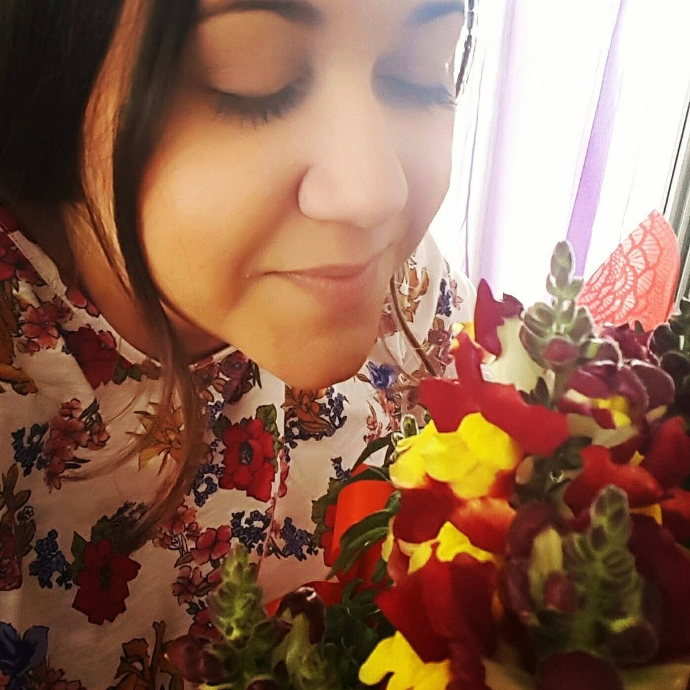

Εξειδικευμένες συνεδρίες λογοθεραπείας για παιδιά και ενήλικες,
κατ' οίκον στον δικό σας χώρο. Με αγάπη, υπομονή και επιστημονική γνώση,
στηρίζουμε κάθε βήμα της επικοινωνίας σας.
Specialized speech therapy sessions for children and adults,
in the comfort of your own home. With care, patience, and scientific knowledge,
we support every step of your communication journey — at home.

Η Κατερίνα Τσίγα είναι ιδιώτης λογοθεραπεύτρια και δραστηριοποιείται από το 2012, με συνεδρίες κατ' οίκον σε παιδιά και ενήλικες στα Νότια Προάστια της Αττικής. Με εξειδίκευση στην αξιολόγηση και αποκατάσταση διαταραχών λόγου, ομιλίας και επικοινωνίας, προσφέρει υψηλού επιπέδου υπηρεσίες, χωρίς να χρειαστεί να μετακινηθείτε από το σπίτι σας.
Είναι απόφοιτος του Queen Margaret University of Edinburgh (BSc in Logopaedics) και μέλος του Σωματείου Λογοθεραπευτών-Λογοπεδικών Ελλάδος (ΣΕΛΛΕ). Με γνώμονα την εξατομικευμένη προσέγγιση και τη συνεχή επιστημονική ενημέρωση, δημιουργεί ένα ζεστό και υποστηρικτικό περιβάλλον για κάθε θεραπευόμενο στον οικείο χώρο του, συνεργαζόμενη στενά με την οικογένεια και άλλους ειδικούς.
Katerina Tsiga is a private speech therapist practicing since 2012, providing in-home sessions for children and adults across the Southern Suburbs of Athens. Specializing in the assessment and rehabilitation of speech, language, and communication disorders, she offers high-quality services without the need to leave your home.
She holds a BSc in Logopaedics from Queen Margaret University of Edinburgh and is a member of the Panhellenic Association of Logopedists – Speech Therapists (SELLE). Guided by a personalized approach and continuous scientific training, she creates a warm, supportive environment for each client in their own space, working closely with families and other specialists.
Ολοκληρωμένες υπηρεσίες λογοθεραπείας κατ' οίκον για παιδιά και ενήλικες, προσαρμοσμένες στις ανάγκες σας.
Comprehensive in-home speech therapy services for children and adults, tailored to your needs.
Αξιολόγηση και θεραπεία διαταραχών άρθρωσης, φωνολογικών διαταραχών, αναπτυξιακών γλωσσικών διαταραχών, τραυλισμού και μαθησιακών δυσκολιών.
Assessment and treatment of articulation disorders, phonological disorders, developmental language disorders, stuttering, and learning difficulties.
Αποκατάσταση λόγου και ομιλίας μετά από εγκεφαλικό επεισόδιο, τραύμα ή νευρολογικές παθήσεις. Διαχείριση τραυλισμού και διαταραχών φωνής.
Speech and language rehabilitation after stroke, injury, or neurological conditions. Stuttering management and voice disorders.
Εξατομικευμένη θεραπευτική προσέγγιση για παιδιά και ενήλικες με τραυλισμό, με στόχο την ευχέρεια λόγου και τη βελτίωση της επικοινωνίας.
Personalized therapeutic approach for children and adults who stutter, aiming for speech fluency and improved communication.
Υποστήριξη παιδιών με δυσλεξία, δυσγραφία, δυσαριθμησία και άλλες μαθησιακές δυσκολίες μέσω εξειδικευμένων εκπαιδευτικών παρεμβάσεων.
Support for children with dyslexia, dysgraphia, dyscalculia, and other learning difficulties through specialized educational interventions.
Αξιολόγηση και θεραπεία διαταραχών φωνής, βραχνάδας, αφωνίας και φωνητικής κόπωσης σε παιδιά και ενήλικες.
Assessment and treatment of voice disorders, hoarseness, aphonia, and vocal fatigue in children and adults.
Οι συνεδρίες πραγματοποιούνται κατ' οίκον, στον δικό σας χώρο — ιδανικά για παιδιά που μαθαίνουν καλύτερα στο οικείο περιβάλλον τους και για ενήλικες ή άτομα με δυσκολία μετακίνησης.
Sessions take place in your own home — ideal for children who thrive in a familiar environment, and for adults or individuals with mobility difficulties.
Πραγματικές κριτικές από το Google Maps και το Facebook, με χρονολογική σειρά — στο τέλος ακολουθούν ενδεικτικά σχόλια πελατών.
Real reviews from Google Maps and Facebook, in chronological order — followed by illustrative client comments.
Η Κατερίνα είναι μία πολύ καλή λογοθεραπεύτρια! Η κόρη μου την θυμάται και την αγαπάει μέχρι τώρα!!! Φιλάκια Κατερίνα να είσαι καλά!!!
Katerina is a very good speech therapist! My daughter remembers her and loves her to this day!!! Kisses, Katerina — take care!!!
Απλά η καλύτερη!!!
Simply the best!!!
Η καλύτερη !!!
The best!!!
Η κόρη μου έκανε τεράστια πρόοδο στον λόγο της μέσα σε λίγους μήνες. Η κυρία Τσίγα έρχεται στο σπίτι μας και το παιδί νιώθει απόλυτα άνετα — περιμένει πώς και πώς τη συνεδρία!
My daughter made huge progress with her speech within a few months. Mrs. Tsiga comes to our home and my child feels completely at ease — she looks forward to every session!
Μετά το εγκεφαλικό επεισόδιο του πατέρα μου, η λογοθεραπεία κατ' οίκον ήταν η καλύτερη επιλογή. Η κα. Τσίγα είναι επαγγελματίας, υπομονετική και πάντα συνεπής.
After my father's stroke, in-home speech therapy was the best choice for us. Ms. Tsiga is professional, patient, and always reliable.
Συνεργαζόμαστε με την κυρία Τσίγα εδώ και δύο χρόνια για τον γιο μας. Εκτός από την πρόοδο στην ομιλία του, εκτιμούμε ιδιαίτερα την καθοδήγηση που μας δίνει ως γονείς.
We have been working with Ms. Tsiga for two years now, for our son. Besides his speech progress, we especially value the guidance she gives us as parents.
Κλείστε το ραντεβού σας σήμερα. Οι συνεδρίες πραγματοποιούνται κατ' οίκον — με μεγάλη χαρά θα σας εξυπηρετήσουμε.
Book your appointment today. Sessions take place at your home — we will be happy to assist you.
Κατ' οίκον επισκέψεις σε: Γλυφάδα, Ελληνικό–Αργυρούπολη, Βούλα, Βάρη, Βουλιαγμένη, Άλιμο και Ηλιούπολη
Home visits across: Glyfada, Elliniko–Argyroupoli, Voula, Vari, Vouliagmeni, Alimos and Ilioupoli
Δεκτά όλα τα ασφαλιστικά ταμεία
All insurance funds accepted
Κατόπιν ραντεβού
By appointment